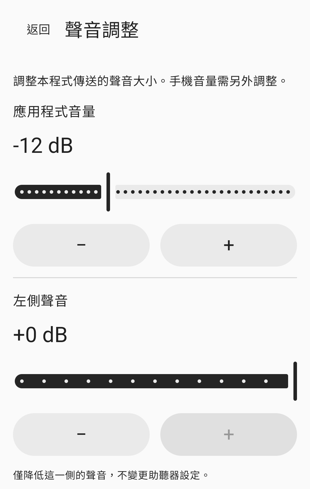

使用方法
連接、調整，然後開始。
連接
將耳機連接至這支手機，再於應用程式中選擇音訊輸出。預設使用有線或 USB 模式。使用 Bluetooth 時，請啟用實驗模式，再手動選擇已連接的輸出裝置。
調整
調整應用程式音量、左右聲道及音色。手機媒體音量須另外設定。戴上耳機，並先以較低音量準備。
開始
允許存取麥克風，閱讀工作階段須知，再按下同意並開始按鈕。僅授予權限不會啟動麥克風。你可以從應用程式內或工作階段通知中停止。
聲音調整
依需要手動調整。
應用程式內的調整值與手機媒體音量是獨立設定。
應用程式音量
在應用程式中調整傳送至所選耳機的音量。也請確認手機媒體音量。
左右聲道
分別降低左右兩側的音量。這些調整不會變更耳機或助聽器本身的設定。
音色
手動調整音色。應用程式不會依據聽力檢查結果自動補償。
上圖為實際聲音調整畫面的局部。右聲道與音色調整不在截圖範圍內。
常見問題
開始使用之前
可以使用 Bluetooth 耳機嗎？
Bluetooth 屬於實驗功能。請先將耳機連接至這支手機，啟用實驗模式，再手動選擇輸出裝置。延遲與音質取決於手機及耳機。
重新連接耳機會自動重啟工作階段嗎？
不會。失去音訊路由、音訊焦點或麥克風權限時，工作階段就會結束。重新連接耳機或重新開啟應用程式都不會自動開始。準備好後，請手動重新開始。
耳機未顯示在清單中怎麼辦？
請確認這支手機的 Bluetooth 媒體音訊連線，並重新整理輸出清單。更多說明請參閱支援頁面。
如何刪除錄音檔或應用程式資料？
應用程式不會建立麥克風錄音檔。如需刪除裝置內的聲音設定、權限請求紀錄或選擇性保留的最近一次試驗紀錄，請參閱本機資料指南。
使用前請先確認。
適用於年滿 18 歲、聽力正常的成人。HearAssist 是手動調整周遭聲音的工具，不用於補償聽力損失、取代助聽器、檢查聽力、診斷或治療疾病。
語音清晰度、實際延遲與聲學安全性尚未經驗證。不保證完全消除雜訊或達到零延遲。
應用程式尚未在商店公開推出。本網站提供產品資訊與支援。